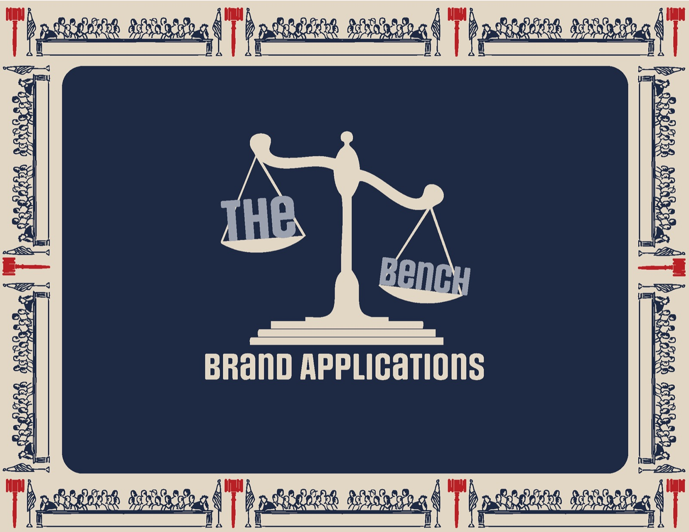
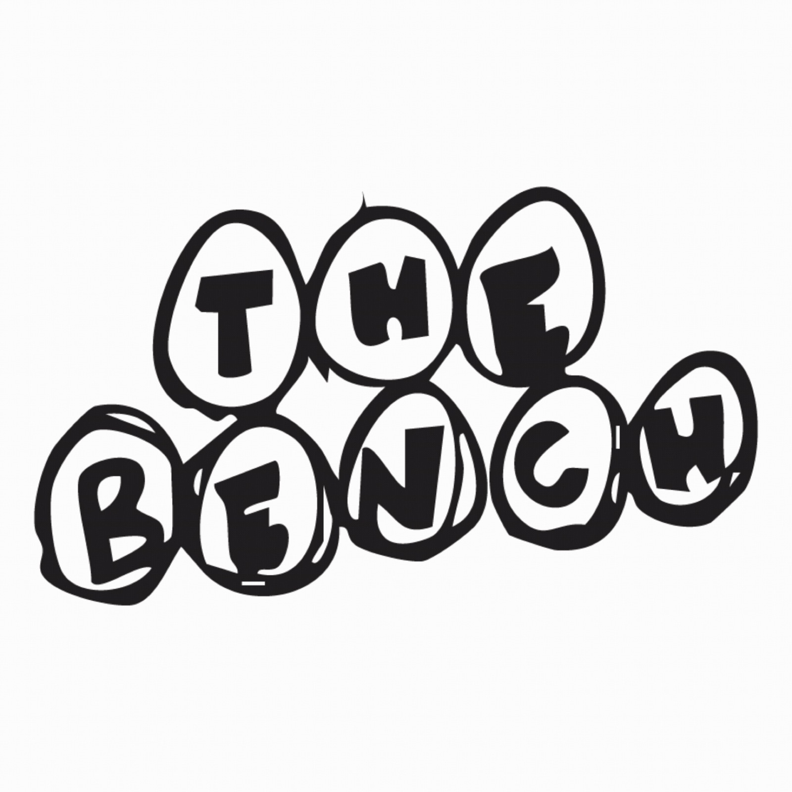
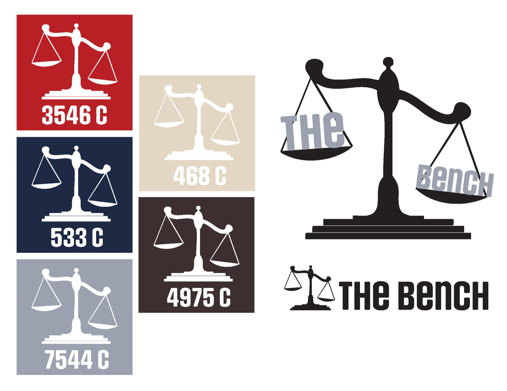
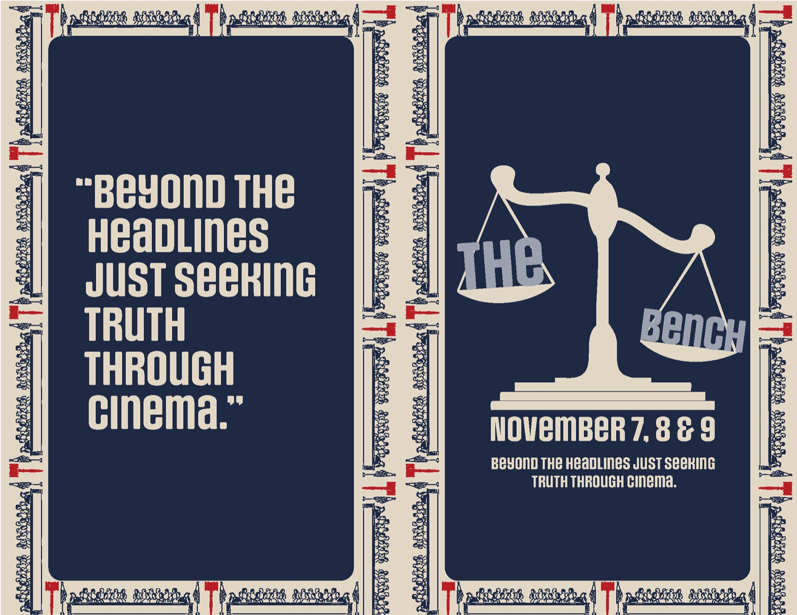
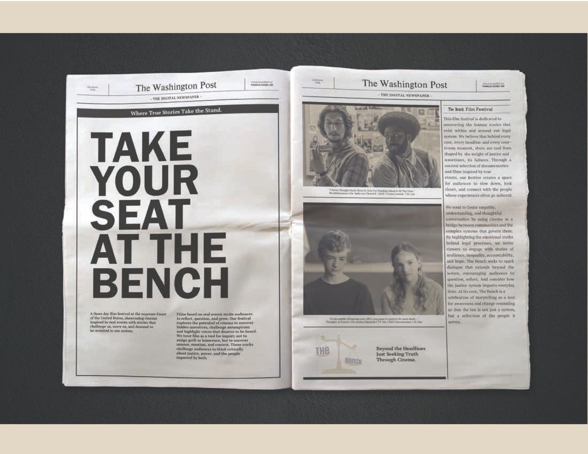
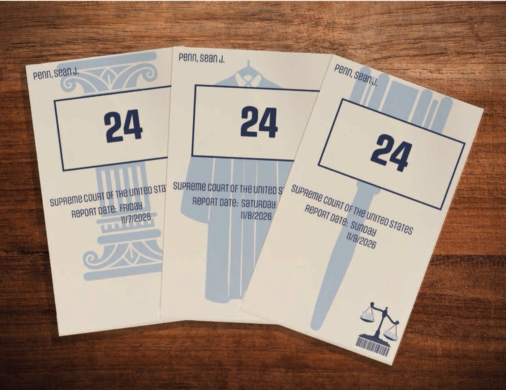
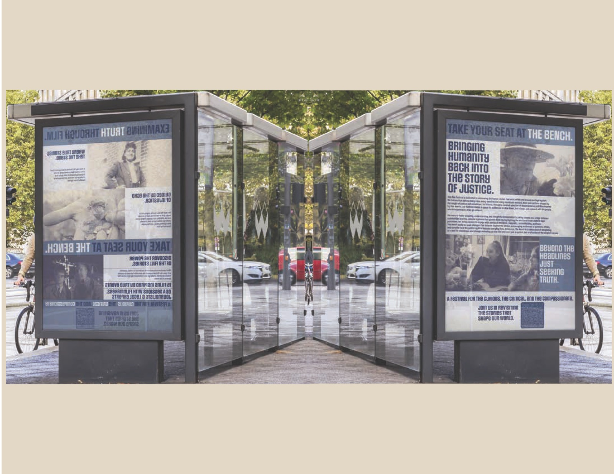

Case study · Brand identity · 2025
An identity for a new film festival of true crime, documentary and psychological drama, designed as a study of judgment and truth.
My role
Festival concept, identity, 24-page program, poster and digital applications
Timeline
6 weeks · Fall 2025
Course
Graphic Design 2: Making Meaning, with Joe Quackenbush
Tools
Figma, Illustrator, Adobe Suite

The idea
The festival asks why we're drawn to stories of investigation and morality. A visual thesis set the direction, a 15-film lineup was curated for three Boston venues, and every piece invites viewers to become active participants, not passive watchers.

Weeks 1–2
Moodboards weighing clinical surveillance against cinematic noir, and 100 wordmark sketches.

Week 5
A shift to the justice system: scales of justice, a gavel border and transcript-style text.
Week 6
Navy, aged cream and crimson, with gavel patterns that carry across every piece.
Process
Week 1
Mission, visual thesis, 15-film lineup and three moodboards.
Week 2
100 wordmarks exploring redacted and forensic letterforms.
Weeks 3–4
Optical scaling for three logos and 10 program sketches.
Week 5
A conceptual reset toward judgment and truth.
Week 6
Grid, gavel borders and a scale icon across every touchpoint.


Outcome
“Beyond the headlines, just seeking truth through cinema.”
The final pieces: a 24-page program designed like a formal judicial dossier, a large brand poster, tickets and a set of digital applications.


Next project
Paws & Pastries →